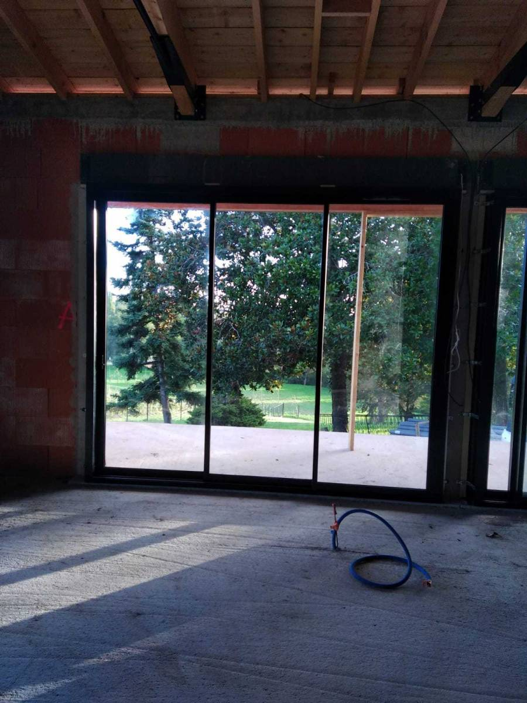
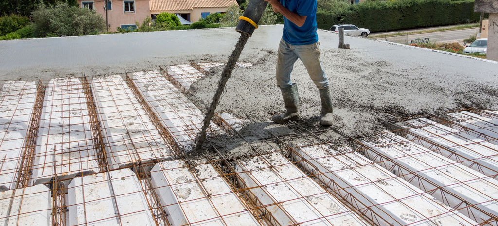
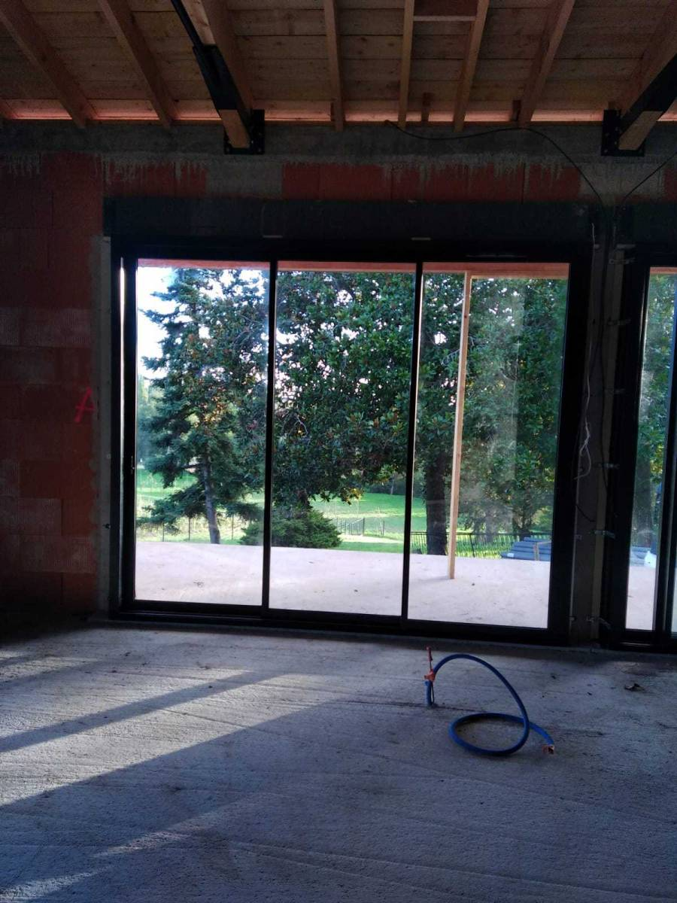
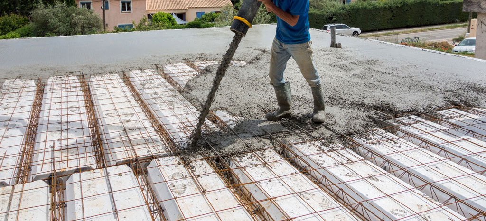
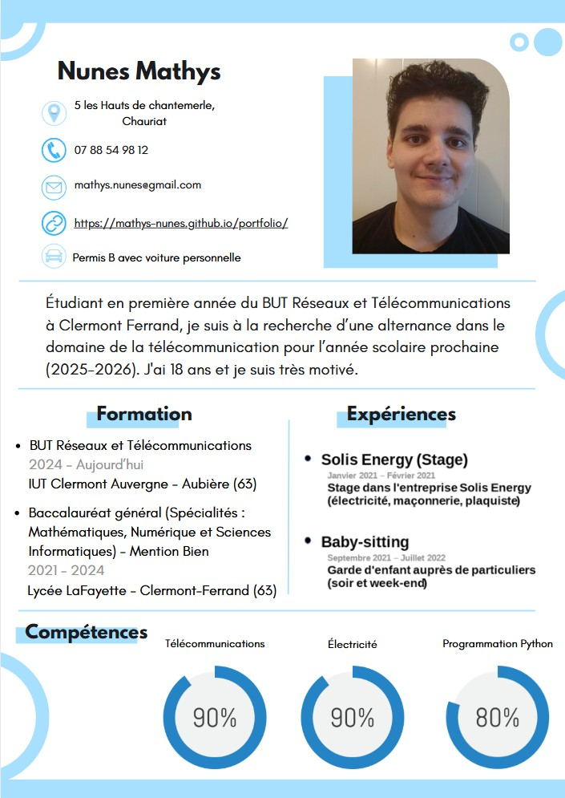

À propos de moi
Je suis actuellement étudiant en BUT Réseaux et Télécommunications à l'IUT de Clermont. Avant d'intégrer cette formation, j’ai étudié au lycée Lafayette en série générale. Passionné par l’informatique et les nouvelles technologies, j’ai monté mon premier ordinateur de mes propres mains, ce qui a renforcé mon intérêt pour ce domaine.
Au lycée, j'ai toujours obtenu de bons résultats dans les matières scientifiques, ce qui m’a poussé à choisir les spécialités Mathématiques et Numérique & Sciences Informatiques (NSI). Les mathématiques m’ont appris à mieux gérer mon temps et à développer un raisonnement logique. Ces compétences m’ont été utiles lors des concours organisés en terminale, où l’objectif était de réaliser un maximum d’exercices dans un temps limité. La NSI, quant à elle, m’a permis de travailler sur des projets concrets, comme la conception d’un robot suiveur de ligne. Le défi était de faire en sorte que le robot dépose une balle dans un trou. Grâce à la programmation, le robot a réussi l’exercice, et j’ai appris que la réussite ne réside pas dans la rapidité mais dans la précision.
Après avoir obtenu mon baccalauréat avec mention Bien, j’ai envisagé de me spécialiser dans la cybersécurité. Les cours de NSI, notamment sur les algorithmes de chiffrement, m’ont permis d’acquérir une bonne base en sécurité informatique. Toutefois, c'est naturellement que j’ai choisi de me tourner vers un BUT en Réseaux et Télécommunications, une discipline qui m’offre à la fois des perspectives de développement et de spécialisation dans un secteur clé.
Après avoir terminé mon BUT 1, je souhaite poursuivre ma formation en alternance pour acquérir des compétences pratiques et découvrir la vie en entreprise. L'alternance me permettrait non seulement de financer mes projets personnels, mais aussi de travailler tout en enrichissant mes connaissances. Je suis particulièrement attiré par le domaine des télécommunications et je souhaite trouver une alternance dans ce secteur afin de mettre en pratique mes acquis et approfondir mes compétences. L’alternance est également un moyen idéal pour préparer mon entrée dans une école d’ingénieur ou poursuivre mes études en master.
Formation
BUT Réseaux et Télécommunications
Clermont-Ferrand
Parcours Cybersécurité
Formation en Réseaux et Télécommunications avec un focus sur la cybersécurité.

Lycée La Fayette
Clermont-Ferrand
Options : Mathématiques et NSI (Numérique et Sciences Informatiques)
Baccalauréat obtenu avec mention Bien.
Expériences Professionnelles
Stage chez Solis Energy
Janvier 2021 - Février 2021 Électricité, Plaquiste, Maçonnerie
Travail réalisé :
Lors de mon stage chez Solis Energy, j'ai eu l'occasion de participer à plusieurs projets de construction et de rénovation. J'ai notamment effectué la pose de Placoplâtre en installant des rails, des montants métalliques et des lisses pour créer la structure, suivi de l'isolation avec de la laine de verre. J'ai également travaillé sur l'installation d'une baie vitrée, où j'ai préparé l’ouverture, posé la menuiserie et assuré l'installation de la baie en garantissant une étanchéité parfaite. Enfin, j'ai participé au coulage d’une dalle béton en préparant le sol, installant un treillis métallique et en coulant le béton pour la dalle, avec un suivi du processus de curation pour garantir sa solidité à long terme.
Résultat :
Ce stage m'a permis de développer des compétences dans la construction et la rénovation, en particulier dans la pose de placo, la maçonnerie et l'installation de menuiserie. Grâce à l'utilisation d'outils spécialisés comme des visseuses, des scies à placo et des niveaux, j'ai amélioré ma précision et ma rigueur dans l'exécution des tâches. Ce travail m'a également permis de renforcer mon esprit d'équipe et ma capacité à m'adapter aux imprévus, tout en respectant les normes de sécurité et de qualité en vigueur.
 



Compétences
Programmation
HTML, CSS, Python, Bash
Réseau
IP, MAC, DNS, DHCP, VLAN, OSI
Télécommunication
Câble coaxial, dB, Atténuation, électricité
Projets
Découverte d’un dispositif de transmission
Transmission de signal dans un câble en cuivre et fibre optique
Ce projet consistait à analyser un signal sinusoïdal dans des câbles en cuivre et fibre optique, en étudiant sa forme, amplitude, fréquence, période, propagation et atténuation. Il m’a permis de renforcer mes connaissances sur les signaux sinusoïdaux et d'améliorer ma précision dans l’analyse des données.
Voir le projetRéalisation de réseaux locaux virtuels
Construction et configuration de réseaux locaux
Ce projet consistait à construire et configurer différents réseaux locaux en ajoutant progressivement des éléments comme routeurs, serveurs, et points d’accès Wi-Fi. J’ai acquis des connaissances sur le protocole IP et les réseaux locaux, tout en renforçant ma persévérance face aux problèmes d’adressage et de routage.
Voir le projetRéalisation du portfolio
Création d'un portfolio en ligne
Ce projet visait à concevoir un portfolio en ligne pour présenter mes compétences. J'ai utilisé HTML, CSS, et JavaScript pour structurer, styliser le site et ajouter des fonctionnalités interactives. Un design responsive a été intégré pour assurer une expérience optimale sur tous les appareils. Ce projet a renforcé mes compétences en développement web et stimulé ma créativité.
Voir le projetDivers
Bowling
Je fais beaucoup de bowling. Ce sport me permet de me détendre tout en travaillant sur ma précision et ma concentration. J’aime relever le défi de chaque partie, en ajustant ma stratégie en fonction des pistes et des boules utilisées. Le bowling m’a également appris l’importance de la patience et de la persévérance. Que ce soit lors de soirées entre amis ou de compétitions avec des collègues, j'apprécie particulièrement l’ambiance conviviale qui règne autour de ce sport.
Nature
En dehors de mes études, j'aime beaucoup passer du temps dans la nature. Je fais souvent de la randonnée avec mes parents et mon frère, ce qui nous permet de partager de bons moments tout en découvrant de beaux paysages. Avec mes amis, j'aime aussi organiser des sorties en plein air, comme des balades ou des pique-niques, pour profiter de la tranquillité et passer du temps ensemble. Ces activités m'aident à me détendre et à me changer les idées, tout en restant actif.

CV
Vous pouvez télécharger mon CV en cliquant dessus.
Capsule vidéo
Contact
Si vous avez des questions ou souhaitez entrer en contact avec moi, n'hésitez pas à me contacter :